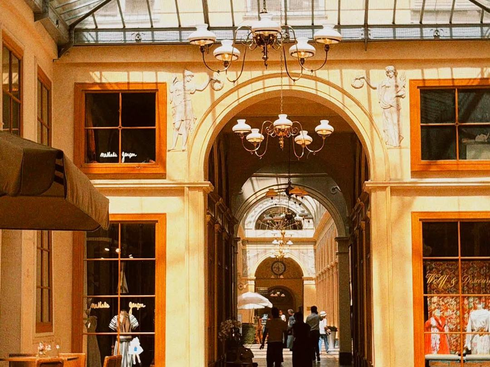
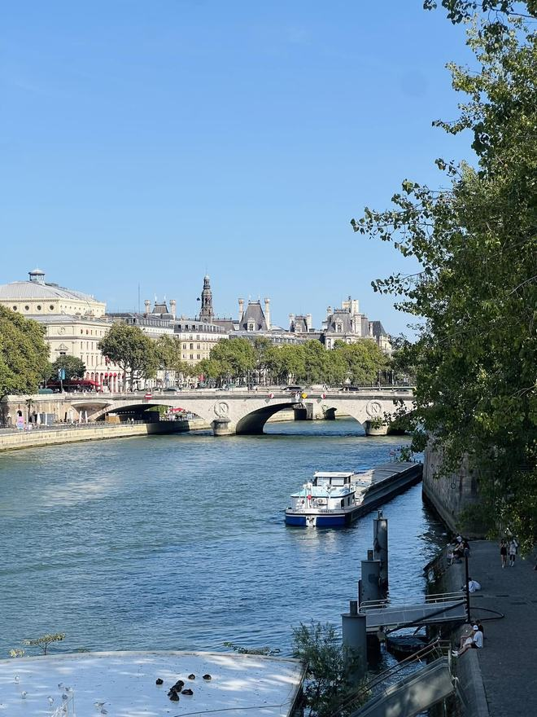
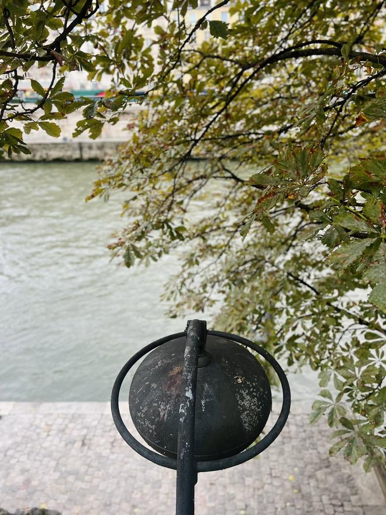

Votre partenaire stratégique
pour réussir vos projets immobiliers.
De la stratégie à la mise en œuvre, Amélie & Partners accompagne les investisseurs pour financer, acquérir et piloter leur patrimoine immobilier.
> 35
investisseurs accompagnés
> 25 M€
de projets structurés
> 75
décisions analysées
> 80
projets à Paris accompagnés
Une vision d’ensemble.
Des décisions cohérentes.
Chaque projet s’inscrit dans une trajectoire. L’accompagnement relie vos objectifs, votre financement et vos choix immobiliers pour préparer la suite avec cohérence.
Comprendre votre situation
Partir de vos objectifs, de votre capital et de votre réalité.
Challenger vos options
Comparer les scénarios, vérifier les hypothèses et identifier les risques.
Avancer à vos côtés
Vous accompagner dans la mise en œuvre, selon le périmètre de notre mission.

Le terrain, plutôt que le discours.
Un investissement se joue dans la rue, dans l’immeuble, dans les documents et dans les échanges avec la banque.
Le bon appui,
au bon moment.
Une décision ponctuelle ou une trajectoire à piloter : nous partons de votre besoin.
01 · Diagnostiquer
Une décision à clarifier
Mettre vos options à plat et déterminer la prochaine étape.
Diagnostic Stratégique02 · Financer
Un projet à rendre possible
Comprendre vos ressources, vos contraintes et ce qu’il faut préparer.
Stratégie de Financement03 · Acheter
Un bien à trouver à Paris
Rechercher, analyser et négocier avec un partenaire à vos côtés.
Recherche immobilière à Paris04 · Piloter
Une trajectoire à construire
Prioriser vos projets et arbitrer les décisions au fil du temps.
Trajectoire InvestisseurLes investisseurs partagent leur expérience.
-
Résidence principale · Fontainebleau
« Pour l’achat de ma résidence principale, Amélie m’a apporté un vrai recul. Son analyse et ses questions m’ont permis de décider avec beaucoup plus de clarté. »
-
Investissement à Paris & Accompagnement Premium · Saint-Maur-des-Fossés
« Je partais de zéro. En deux ans, j’ai construit avec Amélie une stratégie qui m’a permis d’atteindre plus de 1,2 M€ de patrimoine immobilier brut. J’ai surtout apprécié sa vision globale et sa capacité à proposer plusieurs chemins. »
-
Investissement locatif à Paris · Paris
« Je ne connaissais ni l’investissement immobilier ni le marché parisien. En un an, j’ai acheté mes deux premiers studios à Paris. Amélie m’a surtout appris à comprendre le levier bancaire et à dépasser plusieurs idées reçues. »
-
Investissement locatif à Paris
« J’ai commencé l’immobilier tard, à l’approche de la retraite. Avec Amélie, j’ai mis en place une stratégie adaptée qui m’a permis d’acquérir un local commercial dans le 6ᵉ puis un studio dans le Marais. »
-
Résidence principale & investissement locatif · Paris / Fontainebleau
« Je partais de zéro. En trois ans, j’ai acheté deux studios dans Paris centre et ma résidence principale à Fontainebleau. Amélie m’a aidée à avancer étape par étape, sans perdre la vision d’ensemble. »
-
Diagnostic stratégique · Arbitrage résidence principale / investissement locatif
« J’hésitais entre agrandir ma résidence principale et investir à Paris. Une séance avec Amélie m’a suffi pour remettre les options à plat, clarifier mes priorités et savoir dans quelle direction avancer. »
-
Résidence principale & premier investissement immobilier à Paris
« Mon projet de résidence principale était bloqué par la question du financement. Amélie m’a aidé à revoir le montage stratégique et à retrouver une direction claire. J’ai ensuite réalisé mon premier investissement à Paris. »
-
Investissement locatif · Paris 1er
« Mon objectif était de commencer à construire un patrimoine pour pouvoir transmettre quelque chose à mon fils. Amélie m’a aidé à structurer ma réflexion et à avancer malgré une situation qui n’était pas simple. Six mois plus tard, j’ai acheté mon premier studio dans le 1er arrondissement de Paris, un bien que je n’aurais pas imaginé pouvoir acquérir au départ. »
Chaque témoignage reflète une expérience individuelle ; les résultats varient selon les situations.
Premier échange · 30 minutes · gratuit
Parlons de votre prochaine décision.Trente minutes pour comprendre votre situation, vérifier si Amélie & Partners peut vous aider et définir le périmètre utile.
Choisissons un créneau.
Réserver un premier échange30 minutes · gratuit · sans conseil approfondi · sans engagement
Vous préférez écrire ? contact@amelie-invest.com
Une décision argumentée, pas un avis de plus.
Un questionnaire préparatoire, une session de 75 minutes et votre Note de Diagnostic & Décision pour savoir comment avancer.
Diagnostic Stratégique
450 € HTQuestionnaire · Session de 75 min · Note de Diagnostic & Décision
Premier échange de cadrage de 30 minutes gratuit.
Avant de
nous rencontrer.
Dois-je déjà posséder un bien immobilier ?
Non. Le diagnostic peut concerner un premier projet comme un patrimoine déjà constitué. La bonne analyse dépend de votre situation, de votre objectif et du moment où vous vous trouvez.
Ma banque m’a refusé un financement. Pouvez-vous m’aider ?
Oui, lorsque le sujet demande une lecture stratégique du dossier : capacité réelle, revenus retenus, apport, durée, structure ou ordre des opérations. Amélie & Partners n’intervient toutefois pas comme courtier en crédit.
Travaillez-vous uniquement à Paris ?
La recherche immobilière est spécialisée sur Paris. Les sujets de décision, d’arbitrage et de stratégie de financement peuvent être étudiés au cas par cas pour des projets situés ailleurs en France.
Pouvez-vous aussi me conseiller de ne pas investir ?
Oui. L’objectif n’est pas de provoquer un achat, mais d’identifier la décision la plus cohérente. Elle peut être d’acheter, d’attendre, de consolider, de restructurer ou d’arbitrer.
Le premier échange gratuit est-il une séance de conseil ?
Non. Cet échange de 30 minutes sert à comprendre votre besoin, vérifier si Amélie & Partners peut vous aider et définir le bon périmètre. Le conseil approfondi commence dans le cadre d’une mission payante.
« Le patrimoine n’est pas une fin. C’est un moyen de gagner en liberté de choix. »

